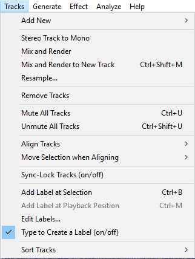

Tracks Menu
From Audacity Development Manual
- Creating and removing tracks
- Applying operations to selected tracks such as mixing, resampling, converting from stereo to mono, aligning or muting
- Adding or editing labels.
The Tracks Menu
- Click, or hover, on any menu item in the image to read about that command.
- 
Add New
See Tracks for details of the different kinds of tracks.
Mono Track CTRL + SHIFT + N
Creates a new, empty mono audio track. This command is rarely needed, since importing, recording and mixing automatically create new tracks as needed. But you can use this to cut or copy data from an existing track and paste it into an empty track.
Stereo Track
Creates a new, empty stereo Audio Track. You may need this if you start with a set of mono tracks and want to export a stereo mix.
Label Track
Creates a new, empty Label Track. When a label track has the yellow focus border you can create a label just by typing. Labels can be used for textual annotation and are commonly used when exporting multiple files from a single track.
Time Track
Creates a Time Track that can progressively increase or decrease playback speed (and pitch) of all audio tracks in the project. The range of possible speed warp is set in the Set Range (upper and lower) option in the Time Track dropdown menu to left of the track. The amount of and direction of warping within that range is controlled using Envelope Tool.
Stereo Track to Mono
Converts the selected stereo track(s) into the same number of mono tracks, combining left and right channels equally by averaging the volume of both channels. An important reason to convert stereo to mono is that it produces higher quality for the same bit rate (and hence file size) in lossy, compressed audio files like MP3 or AAC. Stereo Track to Mono is not available with stereo tracks split into left and right channels, or where the start or end positions of the channels are different.
If you have a split stereo track, you can use the Track Dropdown Menu to join the channels into a single stereo track before converting to mono. This menu also lets you convert a stereo track to a mono track containing only one of the channels:
- Choose "Split Stereo to Mono" from the Track Dropdown Menu if your stereo track is not already split into separate tracks
- Close the unwanted track using the button at the top left of the Track Control Panel.
Mix and Render
Your audio tracks are implicitly mixed whenever you click the Play button on Transport Toolbar or export audio. Mix and Render explicitly mixes down all selected tracks to a single mono or stereo track, rendering to the waveform all real-time transformations that had been applied (such as track gain, panning, amplitude envelopes or a change in project rate). The resulting track (called "Mix") replaces the selected tracks and is placed underneath any tracks that were not mixed and rendered.
Like all tracks, the "Mix" track can be renamed using the Audio Track Dropdown Menu.
| If you try to mix two very loud tracks together, you may get clipping (it will sound like pops, clicks and noise). To avoid this, use the track gain controls to reduce the amplitude of all of your tracks before mixdown. |
See Mixing Audio Tracks for more details.
Mix and Render to New Track CTRL + SHIFT + M
This command performs the same actions as Mix and Render above, except that the original tracks are preserved rather than being replaced by the "Mix" track.
Resample...
Allows you to resample the selected track(s) to a new sample rate for use in the project, leaving the length (and hence playback speed and pitch) unchanged. To resample for export, change the Project Rate in Selection Toolbar.
Remove Tracks
Removes the selected track(s) from the project. Even if only part of a track is selected, the entire track is removed. You can also remove a track by clicking the in its upper left corner.
To remove only the selected audio in a track (without adding it to the clipboard) use or either Split Delete or Silence Audio at
Mute All Tracks CTRL + U, Unmute All Tracks CTRL + SHIFT + U
Mutes or unmutes all the audio tracks in the project, as if you had used the mute buttons from the Track Control Panel on each track. If a track is muted, it cannot be heard in the project and is not exported from it. Note that how the mute buttons affect other tracks depends on your Solo button preference setting. Sometimes it can be as easy to change the mute setting on all tracks (or all but one) by using the mute or solo buttons.
Align Tracks
These commands provide an automatic way of aligning selected tracks with the cursor, the selection, or with the start of the project.
With the exception of the first two commands ("Align End to End" and "Align Together"), each selected track is moved along equally so they remain synchronized with each other. If a label track is included in the selection, its labels will also move equally so they remain synchronized.
When aligning end to end or aligning together, the tracks are always moved individually to enforce the requested alignment (as described below). Label tracks are not affected by these two commands.
When there is a selection, the commands that align tracks with the cursor/selection will align with the start of the selection, and when there is a cursor, the commands that align tracks with the cursor/selection will align with the cursor.
| If Sync-Lock Tracks is enabled, unselected tracks in a Sync-Locked Track Group will also move so that all the tracks in that group remain synchronized, except for the Align "End to End" and "Together" commands where only the selected tracks will move. Aligning end to end or together overrides Sync-Lock Tracks if necessary, so the selected tracks in that group may become desynchronized. |
Align End to End
Aligns the selected tracks one after the other, based on their top-to-bottom order in the project window. The first selected track remains where it is, the start of the second selected track aligns with the end of the first selected track and so on. If you name a group of imported files from an album so that their alphabetical order is the same as the order you want to align them in, Align End to End will make the imported files play in their album order.
After the align, all tracks in the project (not just the selected tracks) will be fitted to the window so that the end of the last track will be visible in the project window.
Align Together
If you select multiple tracks, this command moves the tracks so that they all start at the same time, so audio within them changes its synchronization. The resultant start time is an average of all of the tracks' original starting times. To adjust the starting times of tracks with complete flexibility, use Time Shift Tool.
Start to Zero
Aligns the start of selected tracks with the start of the project.
Start to Cursor/Selection Start
Aligns the start of selected tracks with the current cursor position or with the start of the current selection.
Start to Selection End
Aligns the start of selected tracks with the end of the current selection.
End to Cursor/Selection Start
Aligns the end of selected tracks with the current cursor position or with the start of the current selection.
End to Selection End
Aligns the end of selected tracks with the end of the current selection.
Move Selection when Aligning
These commands are identical to the last five Align Tracks commands that move the tracks equally, but also move the cursor (or selection) so that after the align, the same audio plays in the aligned tracks. For example, Move Selection when Aligning > Start to Cursor/Selection Start will align the selected tracks with the current cursor position or selection start, but then also move the cursor or selection along so that it remains at the same position relative to the new position of the aligned tracks.
Sync-Lock Tracks (on/off)
The Sync-Lock Tracks feature ensures that length changes occurring anywhere in a defined group of tracks also take place in all audio or label tracks in that group, even if those tracks were not selected. This lets you keep existing audio or labels synchronized with each other, even when carrying out actions like inserting, deleting or changing speed or tempo. You can turn this feature "on" or "off" (default is unchecked "off") by clicking this menu item. See Sync-Locked Track Groups for more information.
Add Label at Selection CTRL + B
Creates a new label at the position of the editing cursor or selection region. You can then title the label by typing with the keyboard and hitting "Enter" when you're done. When you click in the label later it will recall the position of the editing cursor or selection at which the label was created. See Label Tracks for more information on how to use label tracks.
Add Label at Playback Position CTRL + M ( COMMAND + . on Mac ).
Like Add Label at Selection but the label is added at the current position during playback or recording.
Edit Labels...
Brings up a dialog box showing all of your labels in a keyboard-accessible tabular view. Handy buttons in the dialog let you insert or delete a label, or import and export labels to a file. See Labels Editor for more details.
Type to Create a Label (on/off)
- When enabled (default), if there is already a label track that has the yellow focus border, you do not need to use "Add Label at Selection" or its CTRL + B shortcut to create a new label. Just type your required label text to create a new label at the position of the editing cursor or selection region. If the label track does not have focus, use the UP or DOWN arrow keys on your keyboard to move focus into the label track.
- When this preference is disabled, typing never creates a label in the focused label track. This lets you use shortcuts (for example, transport shortcuts to play audio related to the editing cursor or selection) without accidentally creating an unwanted label. When you want to create a new label, use "Add Label at Selection" or CTRL + B or "Add Label at Playback Position" CTRL + M.
- if audio is playing, recording or paused, and the cursor or selection is at the same position in waveform and label track
- if there is already a label at the exact same position in the label track.
You can also create a label at the same position by moving focus to and typing in another label track, as long as there is no label yet at that position, and if audio is playing, as long as the cursor or selection in the waveform is at a different position.
Sort Tracks
By Start Time
Sorts all tracks in the project from top to bottom in the project window. After the sort the top track will have the earliest start time and the bottom track will have the latest start time.
By Name
Sort all tracks in the project alphanumerically by track name. Numbers precede letters, and upper-case letters precede lower case letters. It does not use natural number sort, so "10" comes before "2" (but after "02").